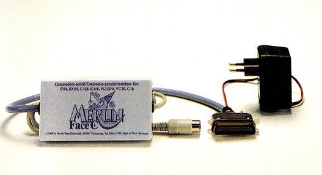

Merlin Fare C+ - »zauberhaftes« Centronics-Interface
Das neue Drucker-Interface von Merlin ist eine vielseitige Centronics-Schnittstelle für die Praxis. Ohne Befehlseingaben simuliert es die Commodore-Druk-ker MPS 801 und 803. Druckerspezifische Funktionen können aber jederzeit genutzt werden.

Will man sich zu seinem Commodore 64 oder 128 einen guten Drucker kaufen, so ist man auf Drucker von Fremdher-stellern angewiesen. Diese haben aber meist eine Centronics-Schnittstelle und können deshalb nicht direkt an den C 64 angeschlossen werden. Da es oft recht umständlich ist, mit einem billigen Software-Interface zu arbeiten, das immer erst geladen werden muß, empfiehlt sich für den ernsthaften Anwender ein Hardware-Interface.
Gerade neu auf den Markt gekommen ist das Merlin-Face C +. Zum Preis von 248 Mark gibt es das Interface mit Steckernetzteil sowie eine gut gegliederte Bedienungsanleitung.
Besitzt man einen FX- oder RX-Drucker von Epson, gestaltet sich der Einbau sehr einfach: Ein Stecker wird am seriellen Port des C 64 angeschlossen, der andere wird mit der Centronics-Buchse am Drucker verbunden und das mitgelieferte Netzteil eingesteckt. Hat man einen anderen Drucker mit Centronics-Schnittstelle, so muß vor dem Einbau das fast schon zu stabile Plastikgehäuse des Inferfaces durch Lösen von vier Schrauben geöffnet werden. Der verwendete Druckertyp läßt sich dann mit vier DIP-Schal-tern einstellen. Durch diese Einstellung wird der angeschlossene Drucker kompatibel zu einem Epson RX/FX; vorausgesetzt natürlich, der Drucker verfügt auch über eine entsprechende Funktion, wie Schmal- oder Elite-Schrift.
Obwohl allgemein alle Drucker mit Centronics-Schnittstelle mit Hilfe des Merlin Face C+ an den C 64/C 128 angeschlossen werden können, sind alle Fähigkeiten der Schnittstelle nur mit Epson und dazu kompatiblen Druckern zu nutzen. Dies gilt vor allem für die Simulation der Commodore MPS 801/803-Drucker, die sehr gut gelungen ist. So gut wie alle Programme, die auf diese Drucker angepaßt sind, laufen problemlos. So auch der COPY-Befehl von Simons Basic, der auf den 7-Nadel-Drucker MPS 801 abgestimmt ist. Auch Listings werden mit allen Grafik- und Steuerzeichen ausgegeben. Selbst ein Druck von Buchstaben in doppelter Höhe ist möglich, und das in Kombination mit Breit-, Fett- und Reversschrift. Mit den Sekundäradressen 10und 11 lassen sich im MPS 801-Modus auch Umlaute statt der eckigen Klammern etc. drucken.
Nicht nur Besitzer eines Typenraddruckers werden die Funktion des Interfaces zu schätzen wissen, mit der Sekundäradresse 2 die Steuerzeichen in Basic-Program-men auch als Text ausgeben zu können. Beispielsweise wird das reverse Herzchen als »CLR« ausgegeben. Das erleichtert die Lesbarkeit von ausgedruckten Programmen wesentlich, leider werden aber statt normalen Grafikzeichen nur Leerzeichen gedruckt. Dieser Modus ist eben für einen Typenraddrucker gedacht, der nur über den Standard-ASCII-Zeichensatz verfügt.
Das wichtigste Argument für den Kauf eines bestimmten Interfaces ist natürlich, daß es mit möglichst vielen kommerziellen Programmen zusammenarbeitet. Wie schon erwähnt, laufen alle Programme problemlos, die für den MPS 801 geschrieben wurden. Auch mit Print Shop, Multiplan, und Data-Becker-Programmen gibt es keine Probleme.
Es wird aber natürlich immer Fälle geben, bei denen ein fertiges Programm eine für das Inferface ungeeignete Sekundäradresse benutzt. Doch auch hier kann leicht Abhilfe geschaffen werden. Dazu wurde dem Interface eine Neuheit eingebaut: ein Kommandokanal mit der Sekundäradresse 15. Mit dem Befehl: OPEN 1,4,15,"A1" kann man beispielsweise das Interface auf die Sekundäradresse 1 fixieren, sodaß es auch mit Vizawrite zusammenarbeitet, was es normalerweise nicht macht. Die Sperrung wird auch beibehalten, wenn der Drucker aus- und wieder eingeschaltet wird, nur ein entsprechender Befehl oder ein Reset kann sie wieder aufheben.
Bei Programmen, die mit zwei Sekundäradressen arbeiten, kann das Interface programmiert werden, die beiden Sekundäradressen durch zwei andere zu ersetzen. Sollte man nicht wissen, welche Sekundäradressen ein Programm benutzt, lassen sie sich über den Dump-Modus des Interfaces schnell ermitteln.
Fazit: Das Merlin-Face C + ist mit Sicherheit eine sinnvolle Anschaffung. Denn durch die Vielzahl der Funktionen gibt es nur wenige Programme, die nicht mit dem Interface verträglich sind. Vorallem sind es Programme, die Funktionen des Commodore MPS 802 ansprechen. In unserem Praxistest hat das Merlin Fa-ce C+ kaum noch einen Wunsch offen gelassen — höchstens den nach einem niedrigeren Preis.
(Andreas Lietz/hm)Info: Merlin Data Elektronik, Kay-Römerfeld 14, 8261 Tittmoning, Tel. 0 86 83/9 33